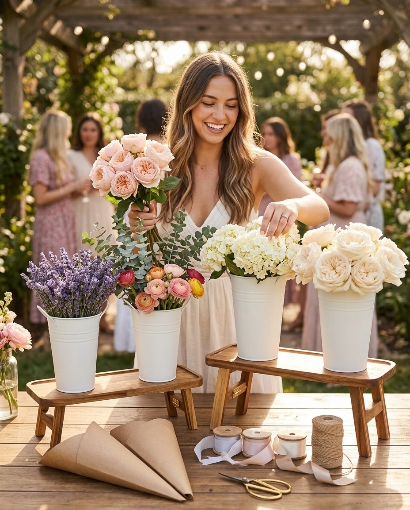

How to Style a Flower Bar for a Bridal Shower
A flower bar turns "here are some flowers" into an experience guests actually remember — and you don't need a florist to pull it off. Here's how to style one that looks like it took all day, in about fifteen minutes.

1. Pick a palette, not a shopping list
The easiest way to make a flower bar look intentional is to limit your palette to two or three tones — tie it to the bride's wedding colors, or keep it simple with a soft neutral (ivory, blush) plus one accent (a warm pink, a deep burgundy). Buy more of fewer varieties rather than one stem of everything. A flower bar with five kinds of white and cream blooms reads as "designed." One with twelve random colors reads as "leftover."
2. Build height before you build anything else
A flat table of buckets looks like a farmers market stall. A tiered stand — even a simple two-level one — instantly makes the same flowers look styled. Put your tallest, showiest blooms (peonies, garden roses, hydrangea) up top where they catch the light, and save the fuller, textural stuff (ranunculus, waxflower, greenery) for the lower tier where guests will be reaching in.
3. Prep before guests arrive
Fill every bucket with water and trim stems at an angle before the first guest walks in. It sounds obvious, but it's the difference between a bar that runs smoothly and one where you're playing florist-slash-plumber for the first twenty minutes. If you're using our stands and buckets, this takes about as long as setting out plates.
4. Add two or three finishing touches — no more
Kraft paper cones for wrapping, a spool of ribbon, a small pair of scissors, and a simple hand-lettered sign are all you need. Resist the urge to add favors, snacks, or a full tablescape to the same surface — the flowers are the moment. Give them the space.
5. Let guests do the rest
This is the part that actually makes a flower bar special: you set the stage, and your guests create something with their own hands to take home. No florist required, no two bouquets alike, and a lot more fun than watching someone else arrange flowers for you.
Building your own flower bar?
Join the list for early access, 15% off your first order, and our free DIY Bouquet Guide.
Get Early Access